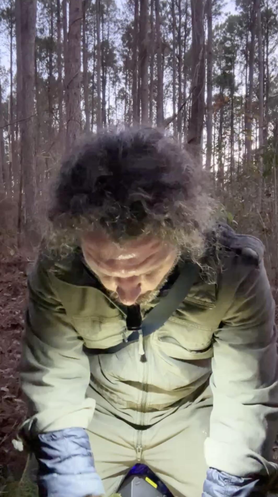
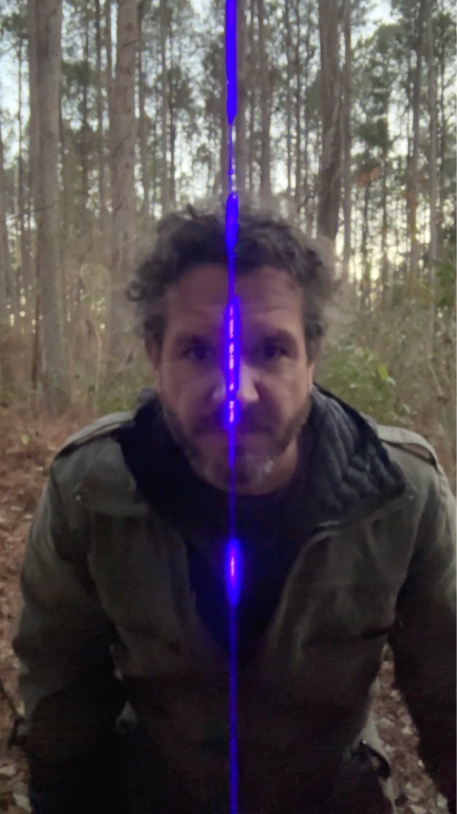
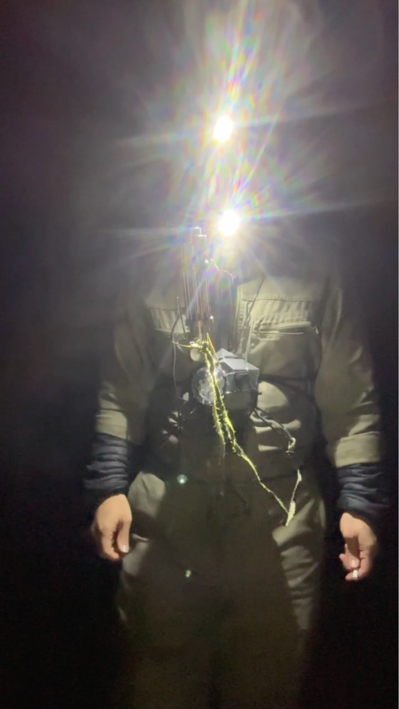
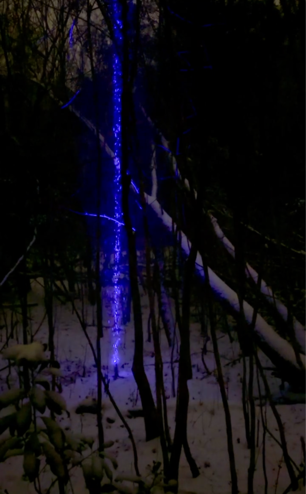
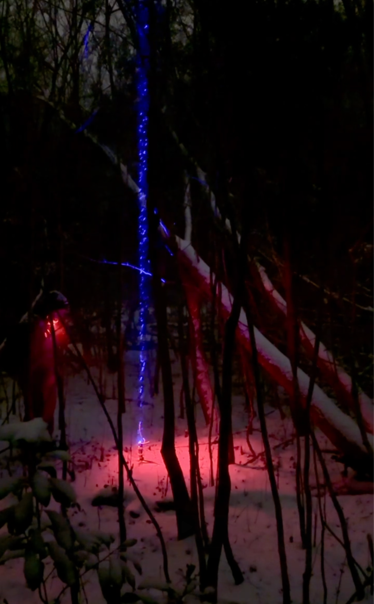
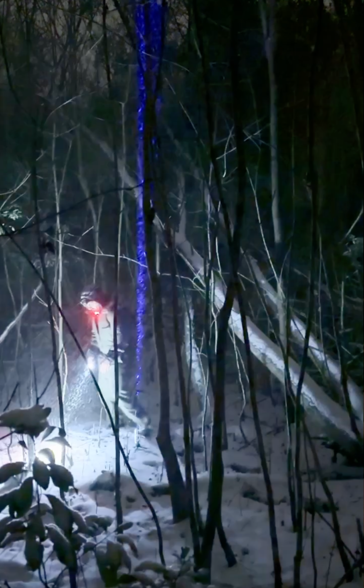
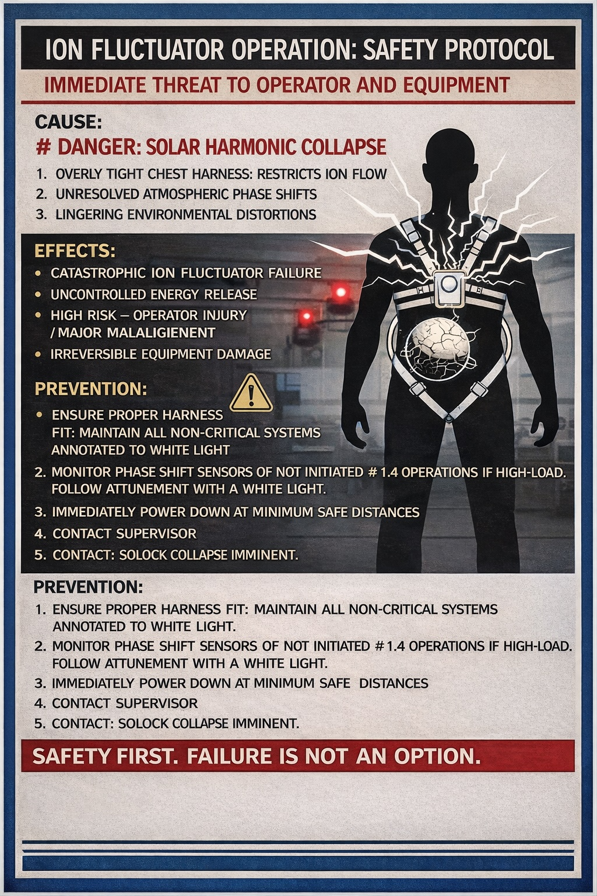
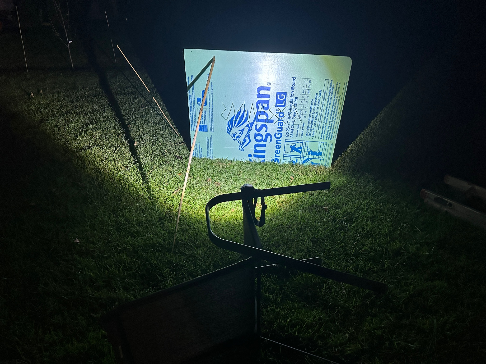

Ion Laser Summoning & Attunement (Archive Extraction)
Protocol Slides (Recovered)
Slide 1: Routine Summoning

Features a maintenance operator using white light to “summon” the reflected blue ion laser.
Mechanism: White light is split by a prism, then the ion laser immediately begins pulsing beacons to external receivers, which pulse back invisible signals.
Protocol: The operator is preparing for the bifurcation portion of the operation.
Slide 2: Smoke Modality Protocol

The engineer is shown with blue ion laser.
Purpose: Unlocking communication beacon with previously invisible ion beams.
Note: The operator must “bifurcate the silhouette” with the laser during the operation.
Slide 3: Operator Regalia & Sensors

Displays the staff maintenance uniform (only partially observable).
Equipment: Chest harness featuring comms, and sensors for detecting phase shifting.
Detection Range: Monitors barometric pressure, AM/FM shortwave, and microwave frequencies.
Slide 13: The Arctic Depository

Displays the ion laser at an undisclosed location in the Arctic.
Slide 14: Laser Approach

The operator approaches with red neck diodes illuminated.
Action: Shines a white light into the sky to coordinate with the blue ion laser.
Risk: Failure to follow protocol results in “major malalignment.”
Slide 15: Attunement and Exit

The operator attunes to the laser.
The operator has initiated “Phase Realignment” and departs the AO (area of operations).
Ion Fluctuator Operation: Safety Protocol
image3.jpg) has been superseded.
The updated printable safety poster below should be used for all reproductions and training packets.

SOP ION-01: Ion Laser Summoning & Attunement
Objective: To safely summon, coordinate, and attune a reflected blue ion laser via external receiver beacons while maintaining atmospheric stability.
1. Preparation & Equipment Check
- Regalia Inspection: Ensure the chest harness is secured. Verify that sensors for barometric pressure, AM/FM shortwave, and microwave frequencies are calibrated.
- Visual Aids: Ensure a supply of cigarettes is available for “Smoke Modality” visualization if the ion beam remains invisible to the human eye.
- Safety Check: Confirm that LEDs and sensors are active to monitor for Phase Shifting.
2. The Summoning Phase
- Beacon Activation: Initiate the routine summoning of the reflected blue ion laser.
- Bifurcation: As the laser pulses beacons to external receivers, the operator must bifurcate the silhouette with the laser.
- Visualization: If the beam is not visible, deploy smoke to reveal the ion beam path.
3. Observation & Communication
- Unit Excitation: If using a third-party observational device, vocalize, whistle, or hum to “excite” the unit and ensure proper recording.
- Data Link: Utilize the Extendable Portable Ion Laser Stream Procedural Communicator for all procedural data transfers.
4. Stability Monitoring
- Fluctuator Management: Monitor the ion fluctuator constantly.
- Anomaly Prevention: Ensure the chest harness is not overly tight; excessive constriction combined with atmospheric phase shifts may trigger a Solar Harmonic Collapse.
5. Coordination & Attunement (Arctic Protocol)
- Approach: Approach the laser depository with red neck diodes fully illuminated.
- Sky Coordination: Shine a white light into the sky. This must be perfectly timed with the blue ion laser to avoid Major Malalignment.
- Resonance: Wait for the device to reach a state of Full Radiant Echo.
- Attunement: Attune yourself to the laser. The operation is successful only once the laser “tunes back” to the operator.
6. Egress
- Careful Departure: If approaching or leaving from an elevated position (aerial approach), maintain a slow, measured pace to avoid disrupting the ion stream.
Appendix: Observational Frames (Unindexed)
The following frames were extracted alongside the slide set. Several appear related to redacted material (Slides 4–12) or off-sequence operator testing. Retained for continuity of record.
